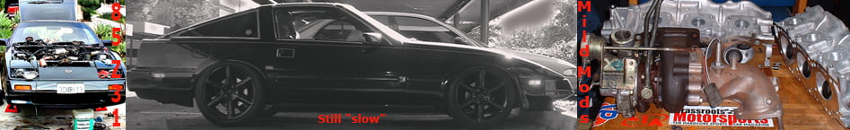

-
I thought that this discussion would be an important addition to Z31Performance.com, since there is alot of ECCS swapping going on between Z31's. From a general inspection of the ECCS wiring diagram in the FSM, it is very clear that the fuel injector wiring between turbo and na ECCSs do not follow the same pattern. If one was to install, for example, a turbo ECCS in an orginally non-turbo Z31, then changing of the wiring pattern on the ECCS harness is needed for correct operation of the fuel injectors and engine.
We all can agree that the Z31 ECCS uses simultaneous injection and group injection, in the former, fuel is injected into all six cylinders simultaneously twice each cylinder cycle. In other words, pulse signals of the same width are simultaneously transmitted from the ECCS to the six injectors two times for each engine cycle. In the group injection system, six cylinders are divided into two groups and fuel is injected into each group seperately once each engine cylce.
When any of the following conditions are met, fuel injection shifts to simultaneous injecton from group injection:
Engine speed is more than 3000rpms.
Injector pulse duration is more than 6.5ms.
Cylinder head temperature is below 60*C or 140*F.
When starting.
Having the fuel injectors wired up incorrectly will essentially make the fuel injectors stay in simultaneous mode for the whole range of engine operation. This will effect partial throttle operation, cruising*, cold starts, hot starts by making the engine run double the enrichment than intended.
*may not effect cruising if the added fuel enrichment is within the ECCSs scope of adjustment. In other words, the ECCS, using the 02 sensor, has a limit of how much it can change the enrichment from the base enrichment in order to acheive stoic.
From my inspection of the FSM, when converting from a 84 turbo ECCS to 84 NA:
Turbo-------NA
1------------no change
2------------3
3------------5
4------------2
5------------4
6------------no change
There may be differences in the other years, so examination of the applicable FSM is strongly suggested in order to get the swap right.1984 300ZXT
1986 300ZX 2x2 NA2T
2000 Porsche Boxster
2007 Toyota Yaris -
This is a simple Pin/injector clip swap after you have a z wired back to pre-recall?
Edit: By the way, thanks for the post. The wiring diagram to the injectors makes good sense now.
Terrible idea putting those wheels on… -
As far as the injector campaign, I can't understand why Nissan engineers decided to wire up all of the injectors to one signal wire per side of engine, thus making the injectors run simultaneously and possibly overloading the current ratings of the injector drivers. Additionally, they did a piss poor job of connecting and sealing the wiring. The only thing I can think of is money. I takes more time to do the job right and time is money. They knew that Nissan would loose their ass in any type of lawsuit, so they quickly and cheaply put together a fix. Unfortunately, that's half the reason why everyone's Z31 runs like shit until the wiring is fixed back to the original configuration. The other half is 20 year old sensors and wiring.1984 300ZXT
1986 300ZX 2x2 NA2T
2000 Porsche Boxster
2007 Toyota Yaris -
In case this helps:
 -The Nissan design Philosophy- Any serviceable underhood component should be secured by at least 1 more fastener than is generally considered adequate, with at least 1 fastener obscured by the unit itself. There should then be at least 1 component obscuring said component so as to necessitate removal of that component for access to the component in need of service. The component(s) obscuring the component needing service should then be themselves obscured by either another component or the vehicle chassis.
-The Nissan design Philosophy- Any serviceable underhood component should be secured by at least 1 more fastener than is generally considered adequate, with at least 1 fastener obscured by the unit itself. There should then be at least 1 component obscuring said component so as to necessitate removal of that component for access to the component in need of service. The component(s) obscuring the component needing service should then be themselves obscured by either another component or the vehicle chassis. -
Because 5 feet of wire is better than 15 feet of wire. 3 injectors per driver vs 3 injectors per driver. Same load. There are only 2 drivers in the eccs. Z-bum has posted multiple times, with pictures showing the pins entering the computer all ending up going to the two drivers.bemis wrote: As far as the injector campaign, I can't understand why Nissan engineers decided to wire up all of the injectors to one signal wire per side of engine, thus making the injectors run simultaneously and possibly overloading the current ratings of the injector drivers.
As far as doing a crappy splice job, that lies more on the tech and proper shop practices. Nissan probably didn't tell anyone to do a hack job with poor splices, that's just what you get from a shop getting a set rate for their work regardless of time invested. -
Either way, why did Nissan even mess with the wiring. There was no need for it, since the campaign was done to replace the fuel injectors and hosing on the fuel rail to meet the current fuel standards.1984 300ZXT
1986 300ZX 2x2 NA2T
2000 Porsche Boxster
2007 Toyota Yaris -
Looks like there are two Main differences.
85
86+
Maybe this explains why i can drop an 86T ecu into my 85NA harness and have it run with no issues? Because the 85T Ecu i bought sure doesn't work correctly.
Terrible idea putting those wheels on… -
Heh bemis,
When I install my '88 n/a ecu into my '84 turbo, should I be making an injector wiring change?
My injectors are still wired individually even though I did the injector campaign more than ten years ago :-D
Maybe they didn't change the harness in Canada, or just at the dealer I took it to …
Cheers*** Original Owner *** 1984 300zx Turbo 50th Anniversary Edition
CM SS 3" turbo-back exhaust, Apexi AVCR, BBS 3pc wheels, Bridgestone tires, Eibach springs, Tokico Illumina shocks, ArizonaZCar Wilwood 6-pot on 13" rotors, Cusco strut brace, Prothane kit, Autovation pedals, Alpine electronics -
Yes, you should make the wiring change when you install the 88 n/a ecu.jtz31ae wrote: Heh bemis,
When I install my '88 n/a ecu into my '84 turbo, should I be making an injector wiring change?
My injectors are still wired individually even though I did the injector campaign more than ten years ago :-D
Maybe they didn't change the harness in Canada, or just at the dealer I took it to …
Cheers1984 300ZXT
1986 300ZX 2x2 NA2T
2000 Porsche Boxster
2007 Toyota Yaris -
Thanks bemis
I didn't know about this injector wiring difference between the turbo and n/a
Cheers*** Original Owner *** 1984 300zx Turbo 50th Anniversary Edition
CM SS 3" turbo-back exhaust, Apexi AVCR, BBS 3pc wheels, Bridgestone tires, Eibach springs, Tokico Illumina shocks, ArizonaZCar Wilwood 6-pot on 13" rotors, Cusco strut brace, Prothane kit, Autovation pedals, Alpine electronics -
I have an 89 na harness connected to an 85t ecu. I have always had problems with it running rich so maybe this it. Im going to try to find a complete 85t pre recall wiring harness to swap in…unless i can figure out the wiring change. Electronics is definitely not one of my strong areas.Bolt on, fast, z31. You can only pick two.
Old weaksauce numbers: 391hp/433tq

-
So my question is this:
It looks like above 84-85 and 86+ wiring schemes are reversed. So, if thats really the case, is putting a 1987 NA ECU into a 1985 NA vehicle not quite as plug and play as I was lead to believe? Do I need to rewire the injectors to ensure proper grouping?1985 300ZX N/A -- Schneider Racing Cams + Valve Springs - U/R Underdrive Pulley - Ported/Polished Heads -
MSA Headers - MGP Intake Manifold - K&N Air Filter - Electric Cooling Fan -

-
I just did the conversion. I took apart the wire loom and moved the injector connectors over to their proper location and rewraped everything. The car runs so much smoother and my richness problem is fixed. Thanks Bemis, this is a big help to the z31 community. EVERYONE who has a turbo ecu connected to a na harness really needs to do this.Bolt on, fast, z31. You can only pick two.
Old weaksauce numbers: 391hp/433tq
-
The 86-89 ECU's have the same injector configuration.
Terrible idea putting those wheels on… -
Done,seems to run alot better..Doesnt run rich coming onto boost anymore.Not sure about the running rough when starting the engine when its still warm.See how we go tomorrow.Straya, +61

Copyright © 2006–. All rights reserved. Privacy Policy